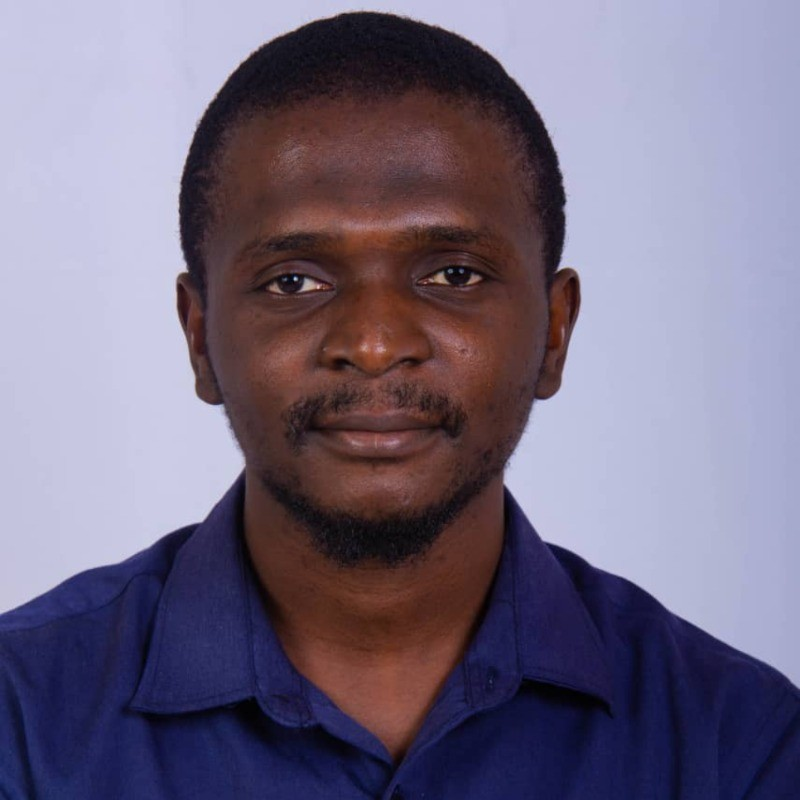
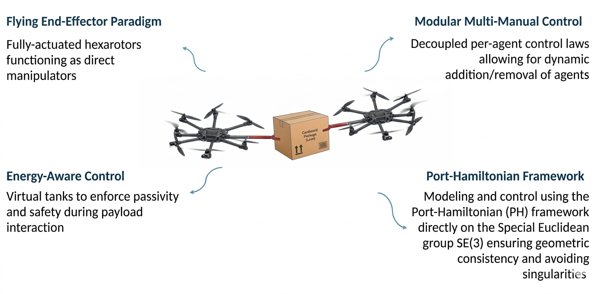
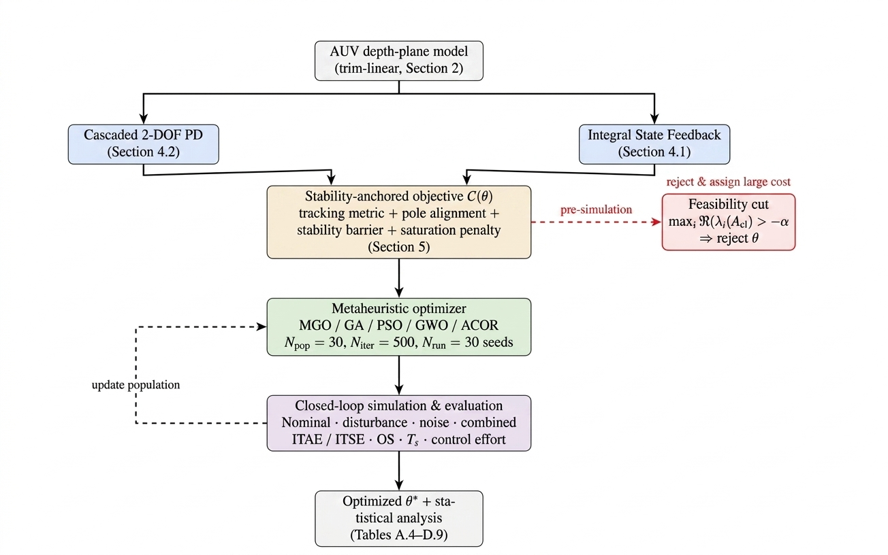
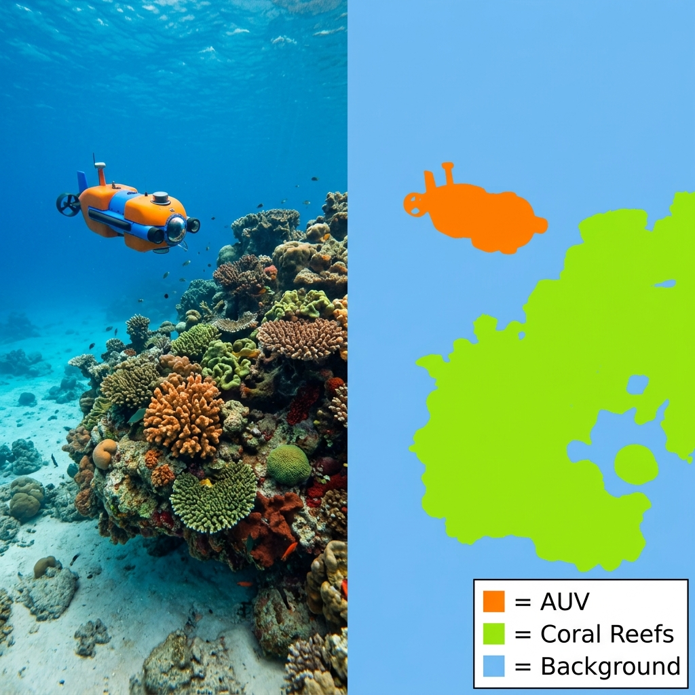

Geometric & Energy-Based Control
Modeling robotic systems on SE(3), with attention to physical consistency, passivity, and stability-preserving interaction.
Robotics, control systems, and intelligent infrastructure
Systems and Control Engineering MSc researcher at KFUPM, working across geometric control, multi-agent aerial robotics, and production-grade data systems.
I design intelligent autonomous systems that connect control theory, robotics, machine learning, and production-grade data infrastructure.

Research identity
My academic work sits at the intersection of nonlinear control theory, robotics, and safety-aware autonomy. I am especially interested in how geometric modeling, port-Hamiltonian systems, passivity, and energy-aware impedance control can make collaborative robots safer and more capable.
My current direction centers on modular multi-manual aerial manipulation, multi-agent coordination, and the translation of rigorous control ideas into simulation and experimental robotic systems.
Modeling robotic systems on SE(3), with attention to physical consistency, passivity, and stability-preserving interaction.
Coordinating aerial and ground robots for cooperative manipulation, logistics, and shared payload transport.
Building safety-aware control intuition while supporting undergraduate students with reinforcement learning and robotics coursework.
Featured work

Master's thesis in progress
Developing energy tank and passivity-based control strategies for cooperative aerial systems manipulating shared objects under uncertain interaction.

Illustrative image from the ROS 2 documentation; not original work by Muhammed Nabeel Abdurrauf.
Robotics stack
Simulation and control packages for aerial-ground robotic systems, including SITL testing, coordinate-frame reasoning, and hardware validation workflows.

Control optimization
Uses metaheuristic optimization, control performance analysis, and robust evaluation scenarios for depth and heave-controller design.

Illustrative image from Google Cloud Blog; not original work by Muhammed Nabeel Abdurrauf.
Data systems
Designs ETL/ELT workflows, data models, and deployment pipelines with AWS, Azure, Airbyte, Kafka, dbt, Docker, and analytical warehouses.

Computer Vision
Developed a deep learning model to accurately segment underwater environments, detecting coral reefs, AUVs, and obstacles to improve autonomous navigation capabilities.
Academic profile
MSc, Systems and Control Engineering. Research/Teaching Assistant and ARM4L research assistant.
B.Eng., Electrical and Electronics Engineering. Graduated with 4.92/5 CGPA.
Pioneer General Secretary, CIE Graduate Student Club at KFUPM; former pioneer president of NIEEES and program organiser for IEEE events.
Publications & papers
Alexandria Engineering Journal; accepted and publication forthcoming. Authors: Muhammed Abdurrauf, Mubarak Badamasi Aremu, Shajjad Dewan, and Nezar M. Alyazidi.
SSD Conference; presented and publication forthcoming. Authors: Ibrahim D. Ibrahim, Mubarak Aremu Badamasi, Muhammed N. Abdurrauf, Nezar M. Alyazidi, and Abdul-wahid A. Saif.
SSD Conference; presented and publication forthcoming. Authors: Shajjad Dewan, Muhammed N. Abdurrauf, and Nezar M. Alyazidi.
Asian Control Conference; accepted. Authors: Muhammed N. Abdurrauf, Shajjad Dewan, Ramy Rashad, and Muhammad Emzir.
Asian Control Conference submission. Authors: Shajjad Dewan, Muhammed N. Abdurrauf, Ramy Rashad, and Muhammad Emzir.
Master's thesis in progress at KFUPM, focused on passivity, energy tanks, and safe cooperative aerial manipulation.
Engineering profile
Research Assistant | Aerial manipulators, ROS 2, PX4, Gazebo, geometric control, lab validation.
Data Consultant | Factory process integration, real-time dashboards, Node-RED, AWS streaming platforms, and IoT data architecture.
Data & Analytics Engineer | ETL/ELT, data warehousing, ML pipelines, AWS/Azure, Redshift, Airbyte, Kafka.
Python Developer | FastAPI, OAuth2, Docker, SQL Server, MongoDB, backend and automation workflows.
Graduate Research and Teaching Assistant | Tutorials, lab support, mentoring, Python and MATLAB research support.
Technical Assistant | Hardware systems, server maintenance, troubleshooting, and operational support.
Technical toolkit
Geometric control, port-Hamiltonian systems, passivity, impedance control, Lyapunov stability, metaheuristic optimization.
ROS 2, PX4 Autopilot, Gazebo, PyBullet, MATLAB, Simulink, Simscape, QGroundControl, RViz.
Python, SQL, FastAPI, scikit-learn, TensorFlow, MLflow, feature engineering, semantic segmentation, REST APIs.
AWS, Azure, GCP, Docker, GitHub Actions, Airbyte, Kafka, dbt, Airflow, PostgreSQL, Redshift, BigQuery.